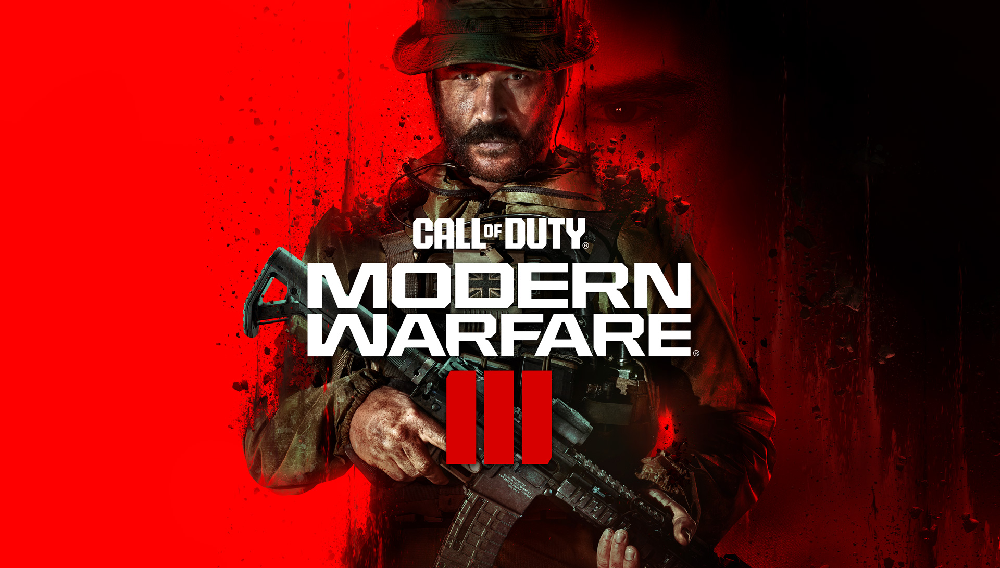
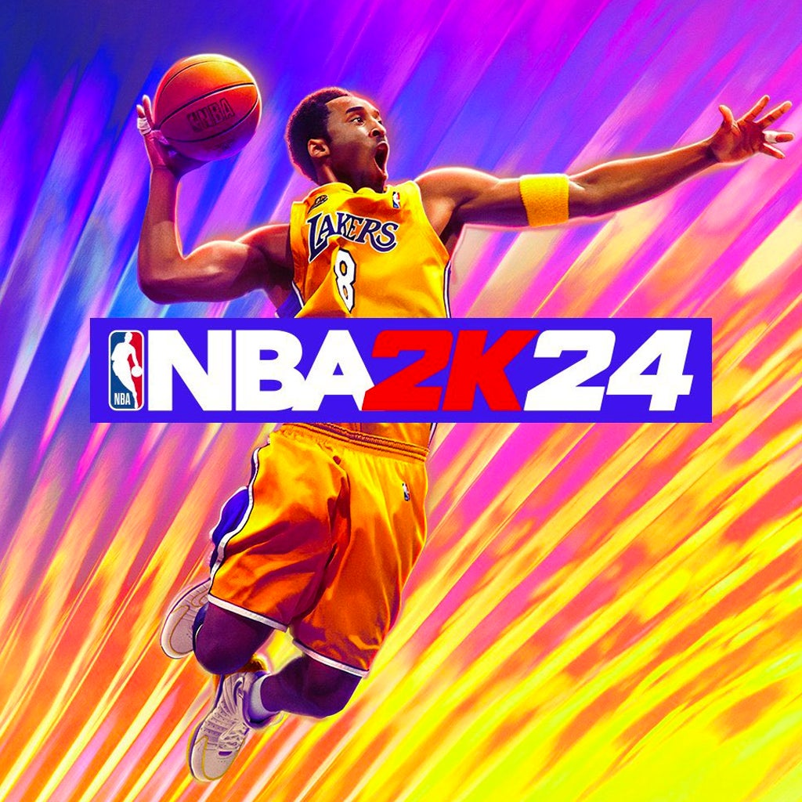
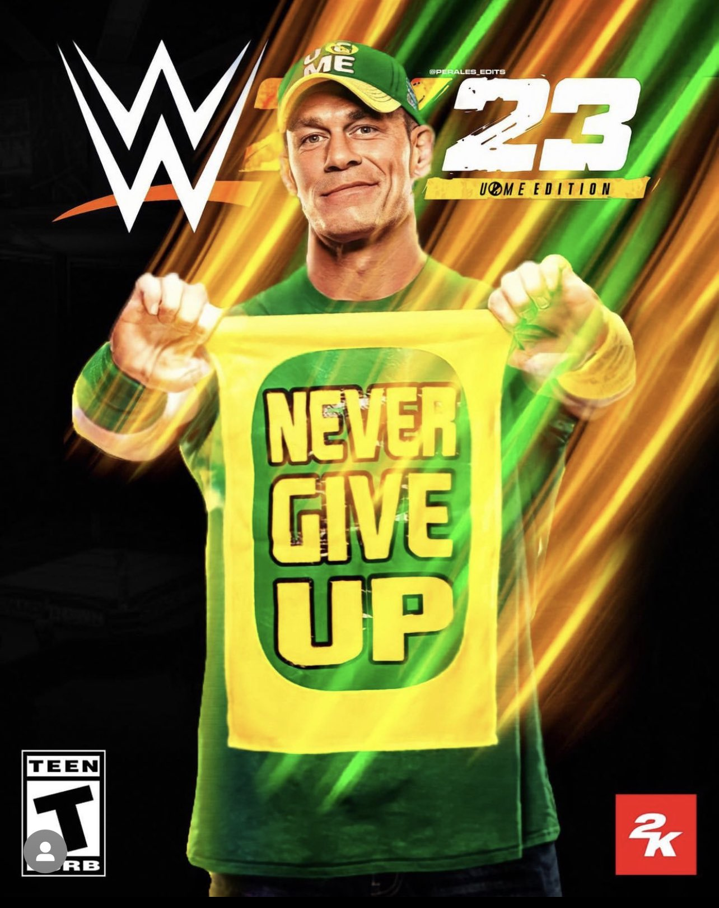
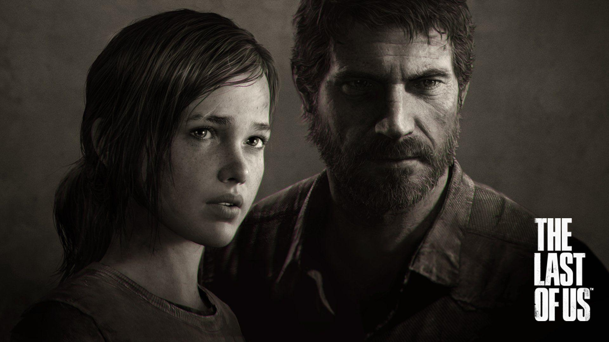
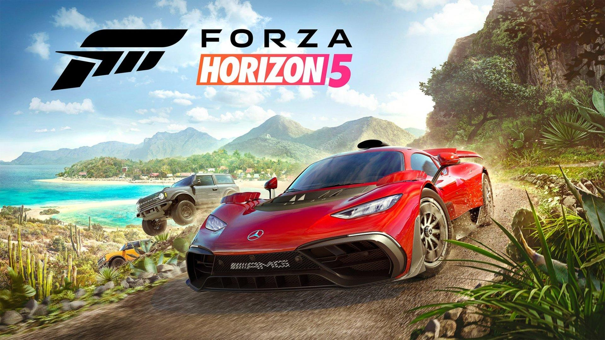

top 10 best game in the world
امروز اومدیم تا باهم ده تا از بهترین بازی های حال حاضر تو دنیای گیم رو باهم بررسی کنیم
1-GTA V
یک بازی ویدئویی اکشن-ماجراجویی است که توسط راکاستار نورث توسعه یافته و در سال ۲۰۱۳ بهوسیلهٔ راکاستار گیمز
عرضه شدهاست. این بازی بعد از اتومبیلدزدی بزرگ ۴ (۲۰۰۸) هفتمین مدخل اصلی در مجموعهٔ اتومبیلدزدی بزرگ بهشمار
میرود. داستان این بازی در ایالت داستانی سن آندریاس که بر اساس جنوب کالیفرنیا ساخته شدهاست، جریان دارد. بخش
تکنفره بازی به داستان سه پروتاگونیست اصلی داستان میپردازد

point:10/10
2-FIFA23
فیفا ۲۳ (به انگلیسی: FIFA 23) یک بازی ویدئویی شبیهسازی فوتبال است. این سیاُمین و آخرین قسمت از سری فیفا است که
در ۳۰ سپتامبر ۲۰۲۲ برابر با ۸ مهر ۱۴۰۱ برای رایانههای شخصی، نینتندو سوئیچ، پلی استیشن ۴، پلی استیشن ۵، ایکس باکس
وان، ایکس باکس سری ایکس و اس، منتشر شد.[۲]
این بازی آخرین بازی با همکاری الکترونیک آرتس و فیفا در سری فوتبال است. بازیهای آینده شبیهسازی فوتبال توسط
الکترونیک آرتس بدون درج نام فیفا قرار است تحت پرچم EA Sports FC نامگذاری شوند.

point:7/10
3-FARCRY 6
فار کرای ۶ (به انگلیسی: Far Cry 6) یک بازی ویدئویی در سبک اکشن-ماجراجویی و تیراندازی اول شخص است که توسط
یوبیسافت مونترآل ساخته شده و به وسیلهٔ یوبیسافت در ۶ اکتبر ۲۰۲۱ برای مایکروسافت ویندوز، پلیاستیشن ۴ پلی استیشن
۵ و اکسباکس وان اکسباکس سری اکس و سری اس و گوگل استادیا منتشر شد. این ششمین عنوان اصلی در مجموعه بازیهای فار
کرای محسوب میشود.

point:8/10
4-CALL OF DUTY
بازی ویدئویی تیراندازی اول شخص است که بهوسیلهٔ اسلجهمر گیمز توسعه یافته و از طریق اکتیویژن عرضه خواهد شد. این
بیستمین بازی در مجموعهٔ ندای وظیفه و سومین مدخل از زیرمجموعهٔ بازراهاندازیشدهٔ جنگاوری نوین است که دنبالهای بر
جنگاوری نوین ۲ در سال ۲۰۲۲ خواهد بود. این بازی در ۱۰ نوامبر ۲۰۲۳ برای پلیاستیشن ۵، پلیاستیشن ۴، ایکسباکس سری
اکس و سری اس، ایکسباکس وان و ویندوز منتشر خواهد شد.

point:9/10
5-NBA2K24
استودیو Visual Concepts و شرکت ناشر 2K از نسخه جدید سری NBA 2K رونمایی کردند. همانطور که انتظار میرود این نسخه
با عنوان NBA 2K24 شناخته خواهد شد و قرار است در تاریخ ۱۷ شهریور (۸ سپتامبر) امسال روی پلتفرمهای کامپیوتر، نینتندو
سوییچ، پلی استیشن 4، ایکس باکس وان، پلی استیشن 5، ایکس باکس سری ایکس | ایکس باکس سری اس عرضه شود.

point:9/10
6-W2K23
2K Sport با WWE 2k23 بازگشته است. وقتی کمپانی Take-Two در اوایل سال 2013 حقوق فرنچایز سری WWE را به دست آورد،
این سری توسط استودیوی ژاپنی Yuke توسعه داده میشد. با ورشکسته شدن کمپانی THQ و در نهایت فراز و نشیب های بسیاری که
در روند توسعه این سری رخ داد در سال 2019 ، 2K Sport تصمیم گرفت وظیفه ساخت سری WWE را به صورت کامل به دست استودیوی
چیره دست و کهنه کار Visual Concepts سپرده شود. با سابقه درخشان این استودیو در ساخت و توسعه بازیهای ورزشی، همگان
انتظار داشتند WWE 2K20 بتواند روحی تازه را در کالبد نیمه جان سری بازیهای کشتی کج بدمد.

point:9/10
7-THE LAST OF US
با معرفی بازی The Last of Us Part 1، تعدادی از کاربران بر این عقیده بودند که The Last of Us همچنان محصولی عالی و
قابل بازی است و نیازی نیست که بازسازی شود؛ آن هم زمانیکه یک سال پس از عرضه، برای کنسول نسل هشتمی سونی ریمستر شده
بود. بااینحال ناتیداگ اعلام کرده بود که The Last of Us Part 1 را از ابتدا توسعه دادهاند و با کمک قدرت و
سختافزار پلی استیشن 5 قصد دارند بهترین تجربه ممکن را ارائه داده و حال و هوای متفاوتی را در اختیار کاربران قدیمی
قرار دهند. درحالت کلی، باید بگویم که The Last of Us Part 1 تا حد خیلی زیادی همان چیزی است که هواداران از بازی
انتظار دارند.

point:8/10
8-E FOOTBAL 24
eFootball محصول کمپانی ژاپنی KONAMI یکی از محبوبترین بازیهای شبیهسازی فوتبال است که در نسخههای قبلی (تا سال
2021) با نام Pro Evolution Soccer (یا به اختصار PES) عرضه میشد. در این بازی میتوانید تیم مورد علاقه خود را از
میان تیمهای موجود انتخاب کرده و تجربه یکی فوتبال زیبا و مهیج را داشته باشید. علاوه بر آن میتوانید تیم اختصاصی
خود را نیز از پایه ساخته و آن را به اوج برسانید و با شرکت در مسابقات مختلف از جمله لیگ قهرمانان و یا لیگ اروپا
مهارتهای خود را به نمایش بگذارید و جامهای مختلف را بدست بیاورید.
 point:6/10
point:6/10
9-CYBERPUNK
سایبرپانک ۲۰۷۷ با مقدمه و شروعی واقعا طوفانی آغاز میشود. بازی ابتدا امکان ساخت کاراکتری با جزییات زیاد را، از
موارد ظاهری گرفته تا یکسری قابلیتها برایتان فراهم میکند و همینطور اجازه میدهد تا از بین سه Lifepath موجود،
یکی را انتخاب کنید. بسته به انتخابی که در این قسمت دارید، بازی را در نقطه متفاوتی آغاز خواهید کرد؛ مثلا با انتخاب
نومد، همهچیز از یک گاراژ در وسط بدلند که منطقه بیابانی و خارجشهر است آغاز میشود. فارغ از اینکه چه مسیری را
انتخاب کنید، ساعات و اتفاقات اولیه بازی واقعا جذاب هستند؛ سایبرپانک ۲۰۷۷ خیلی خوب در این بخش بازیکن را وارد داستان
و ماجراهایش میکند
 point:7/10
point:7/10
10-FORZA HORIZON
مدت زمان زیادی از خلق اولین نسخه Forza Horizon نمیگذرد؛ اما این فرنچایز به راحتی تبدیل به بهترین سری بازی
ریسینگ آرکید صنعت گیم شده است. حمایت و استقبال طرفداران به قدری زیاد بود که در طول ۹ سال، ۵ نسخه از سری Forza
Horizon عرضه گردید. این عناوین تا حدی کیفیت بالای خود را به نمایش گذاشتند که هماکنون Forza Horizon، یکی از بهترین
فرنچایزهای ریسینگ تاریخ قلمداد میشود.

point:10/10